在我们实际开发报表的时候，我们需要按一定的业务规则组织好报表的模板设计，让报表尽可能的贴近实际的需求，在之前的随笔中《使用FastReport报表工具生成报表PDF文档》介绍了FastReport生成常规报表的处理，本篇随笔回顾常规报表的处理效果，并介绍基于FastReport生成标签纸打印需要的报表格式。
我们一般处理报表的时候，大多数情况碰到的是明细报表，或者有主从表这种样式的报表格式，明细报表就是只需要设计一个表头，按列表展示即可，如下所示格式。
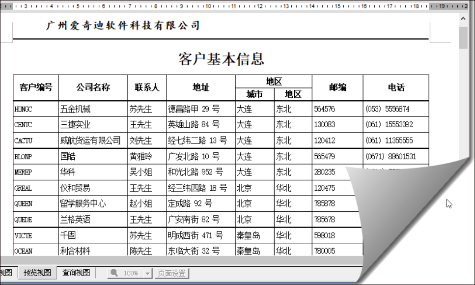
或者类似一个基于XtraReport报表的功能界面，如下面图示所示。
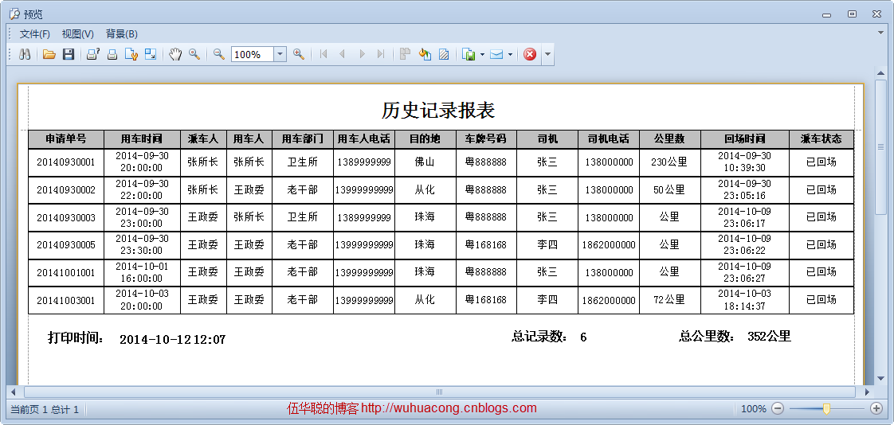
这里面涉及的字段，包括字符型、日期型，数值型、枚举类型等，还有统计值、打印时间（参数），因此也算一个比较完整的报表展示了。
或者一些有一条记录构建成的报表信息，如下报表所示，这些也只是设计模板上的差异，在模板里面绑定对应的字段或者参数即可实现。
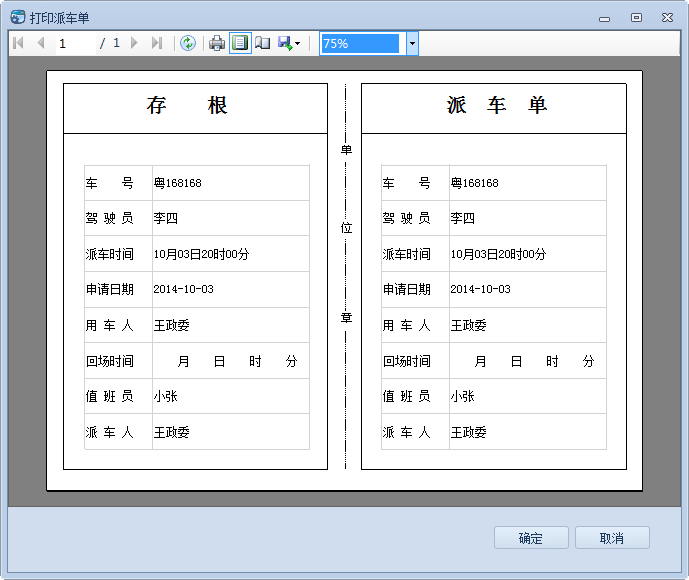
还有一种是主表有信息，从表有明细的数据展示方式，这个在随笔《使用FastReport报表工具生成报表PDF文档》有介绍过。
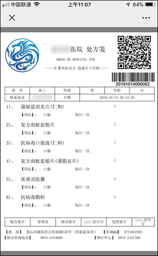
之前在随笔《在Winform开发中使用Grid++报表》和《在Bootstrap开发框架中使用Grid++报表》中介绍了使用锐浪报表来设计展现标签打印报表的处理，如下效果所示。
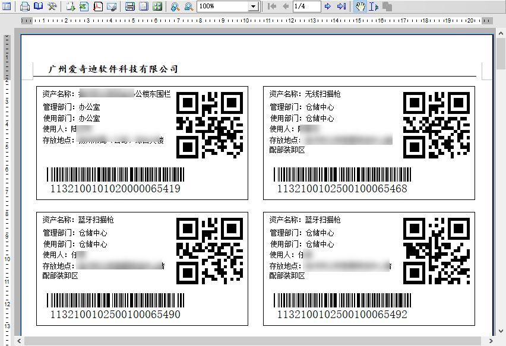
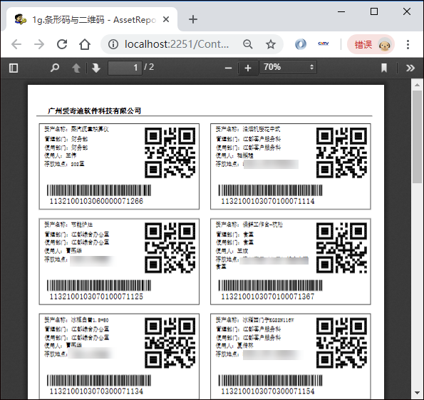
本篇随笔介绍基于FastReport报表工具生成标签打印文档的操作。
其实如果细心查找，FastReport也提供了很多Demo案例，其中就有标签的案例介绍，设计效果如下所示。
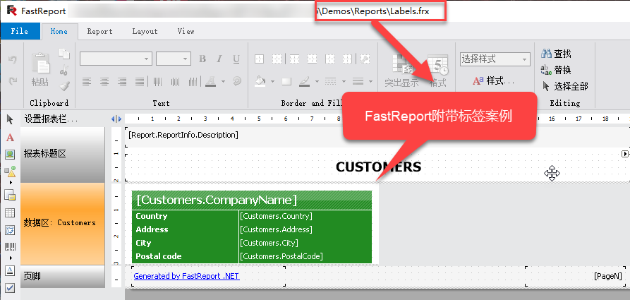
报表预览效果如下所示。
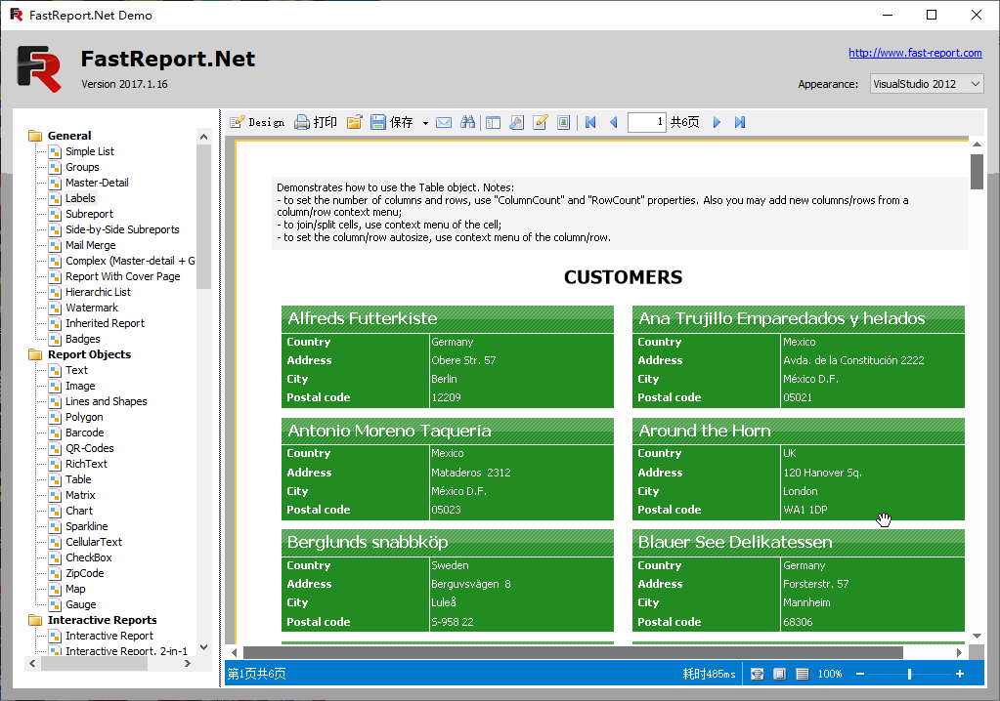
我们要做的类似，不过我们需要增加二维码、条码上去进行打印而已。
首先我们需要设计一个报表模板，设计格式如下所示。
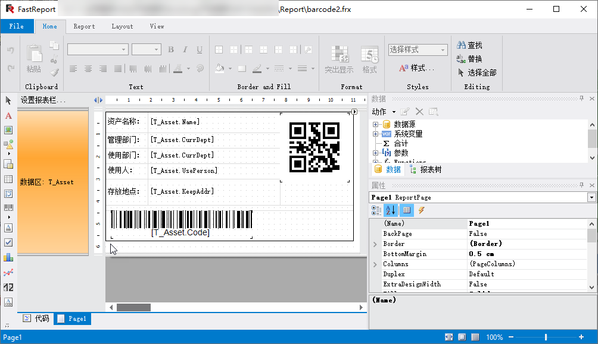
在其中我们需要加入一个数据源进行绑定和测试预览效果，我们选择SQLServer一个表的数据进行创建数据源，如下所示。
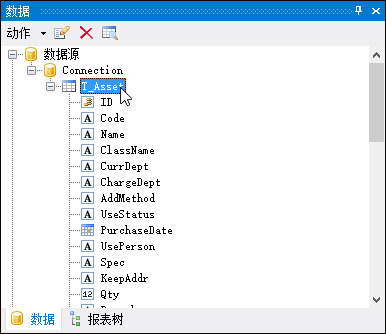
设计报表，我们需要根据实际标签纸张预先设计好报表页面大小，如下所示。
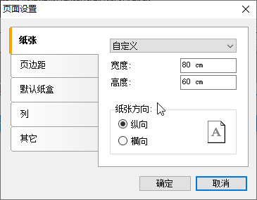
如果需要展示多少列，可以通过页面设置中的列进行指定划分多少列，如下所示。
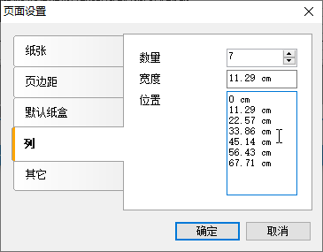
不过在实际测试的时候，这样的属性设置，报表渲染的时候，是按指定高度，从左列到右列进行依次展现的，如果我们需要按实际渲染高度，那么这里可以设置为1，然后由数据区进行设置列的数量即可。如下所示。
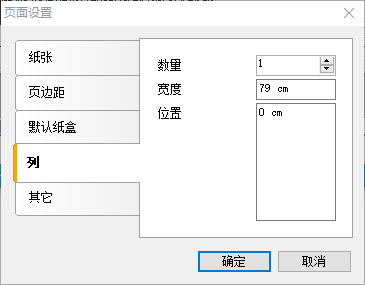
数据区设置列数为实际需要展现的列数，这个根据宽度预览看大概设计多少列合适，让页面高宽尽可能利用好即可。
二维码标签报表格式设计效果大概如下所示。
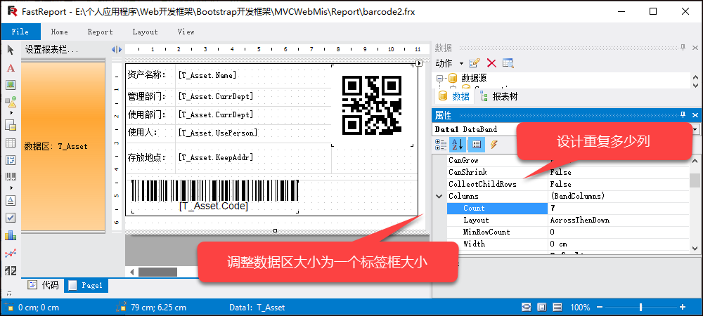
我们使用数据源的数据预览下效果，效果还是杠杠的。
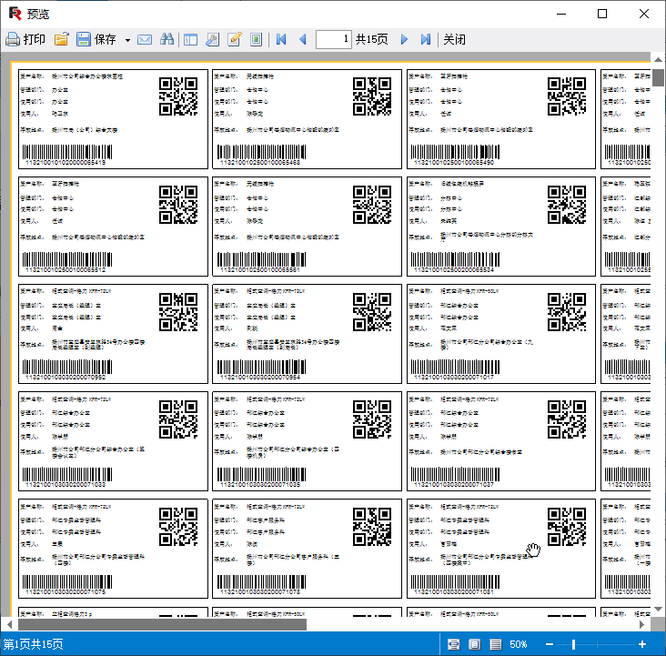
报表模板弄好了，我们就需要如何生成FastReport报表或者导出PDF了。
我在之前的随笔《使用FastReport报表工具生成报表PDF文档》里面介绍了FastReport报表的处理代码，这里做法依旧差不多，绑定数据源即可展示或者导出PDF了。
最主要的代码如下所示。
//生成PDF报表文档到具体文件
Report report = new Report();
report.Load(reportPath);
//定义参数和数据格式
var dict = new Dictionary<string, object>();
var dt = DataTableHelper.CreateTable("ID,Name,CurrDept,Code,UsePerson,KeepAddr");
if (list != null)
{
foreach (var info in list)
{
var dr = dt.NewRow();
dr["ID"] = info.ID;
dr["Name"] = info.Name;
dr["CurrDept"] = info.CurrDept;
dr["Code"] = info.Code;
dr["UsePerson"] = info.UsePerson;
dr["KeepAddr"] = info.KeepAddr;
dt.Rows.Add(dr);
}
}
//刷新数据源
foreach (string key in dict.Keys)
{
report.SetParameterValue(key, dict[key]);
}
report.RegisterData(dt, "T_Asset");
//运行报表
report.Prepare();如果需要导出PDF，那么代码增加部分导出处理即可。
//导出PDF报表
PDFExport export = new PDFExport();
report.Export(export, realPath);
report.Dispose();我们来看看实际在浏览器预览的效果，如下所示。
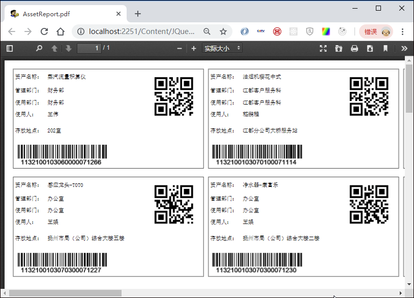
以上效果结合了pdfJS的在线预览PDF操作，如果需要了解PDF的在线处理，参考下随笔《实现在线预览PDF的几种解决方案》。